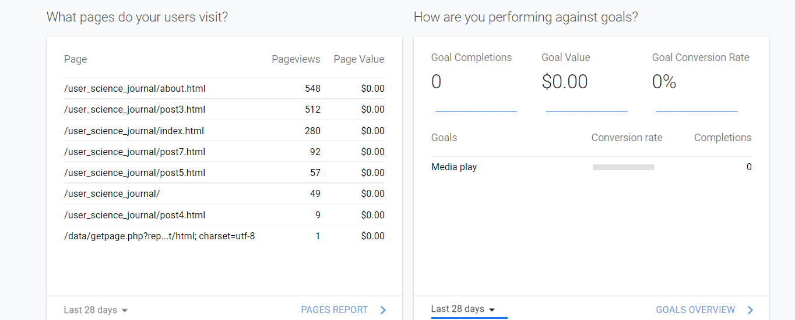
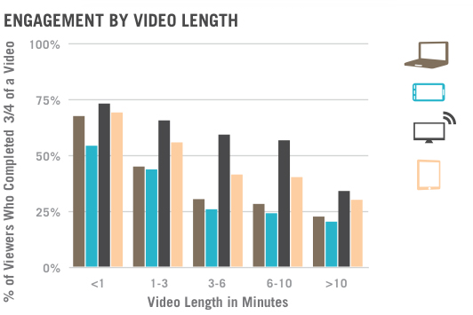
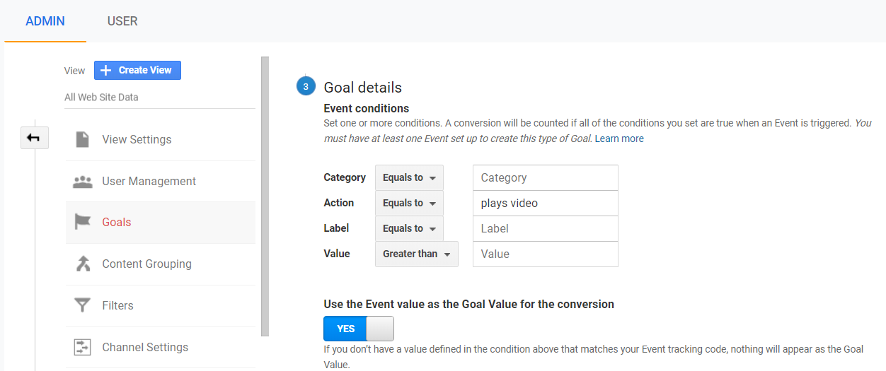

The days of making a business decision on a hunch have been long gone. What if you could make decisions that would yield the greatest outcome, impact or profit for your business or website using data? Google analytics allows businesses, bloggers, and organizations to reach their maximum goals with a high level of efficiency with the data collected with Google Analytics.
Everyone wants to make progress toward their goals. As a “web analytics service offered by Google that tracks and reports website traffic currently as a platform inside the Google Marketing Platform brand ”Google Analytics allows companies to make informed decisions on marketing strategies, client responses to newsletters, and website interactions to strengthen business decisions to increase sales, service delivery, and build user trust with clients
Google Analytics: Conversions – Four Goal Types
Google Analytics allow you to track conversions.
- Destination- A specific location loads-Thank you for registering! web page or app screen
- Duration- Sessions that lasts a specific amount of time or longer 10 minutes or longer spent on a support site
- Pages/Screens per session A user views a specific number of pages or screens 5 pages or screens have been loaded
- Event -Social recommendation, video play, and click
Goal for Evaluation: Event, Media, Video Play
Goal and Media Selection and User Engagement Strategies
The Conversion option selected to for this conversion was a media event. Testing if users would watch a video on the index page of the User Science Journal. The measurements taken to strengthen the media event included, posting a “watch videos” message in the left aside of the index page, Posting four YouTube videos to the index page with content related to the topics in the User experience Journal from credible experts and companies in the field of User Experience.
The media content was selected as it might appeal to the targeted client, students studying user research, to increase the chance of increasing conversions with the media event. Funneling users to strengthen the goal success included two user engagement strategies. Users were funneled to the event with the use of a direct email and a post to a user account for user experience.
Data Evaluation
Media event evaluation is comprised of three metrics, Goal completion, and value and conversion rate. Goal completion measured the number of people who completed the media event and watched a video. Website monetization isn’t applicable for the User experience Journal.
 Image of Goal DataConversion data includes user behavior acquisition, bounce rate and goal success. The data indicates that 39.13 percent of users viewed the landing page, 24.64% viewed the index page and the __10.13_ viewing post 3 of the use experience journal. The 24.64 percent of users viewed the index page, the index page had four videos or potential opportunities to complete the media event. However, the users visiting the index page did not complete the media event.
According to google analytics, The Funnel Visualization report only shows one session to each step in the funnel, so if a user sees the same step twice—either by navigating back to it from another step or refreshing the page/screen—the second session shows as an exit to that step's page/screen. The data from the media event goal is zero as the media event was not successful.
Conclusion
The media event goal for the User Experience Journal was not successful. Hypothesis on lack of goal success includes, video length and content, administrative goal settings and audience interest.
According to UX Planet writer, Nick Babbich, Videos require more of users’ time than an equivalent piece of text, because they don’t support rapid scanning for information (users can’t effectively skim video content). Shorter videos are better for holding attention. If t a media event were selected as a future goal, selecting videos with a shorter duration might yield stronger conversion rates.
 Avergae viewing time across devices for videoVideo content might not appealed to the target audience which according to socialmediatoday.com is of significance for media content. Eric Harr includes a number of best practices to take into consideration when using media content on being that one should “Frame messages in the interest of the viewer. The fact is that people care less about your product, brand or cause than they do about how it improves their lives. Stay viewer-centric and seek to leave them informed, inspired, entertained-or all three. Humor is powerful, engaging and effective-if you can pull it off.
The last likely hypothesis for poor goal success includes the administrative goal setting process in google analytics. After reviewing the event administrative settings, providing a stronger category and event name might increase goal conversion rates. The evaluated goal didn’t have strong category labels in the administrative settings.
 Event Settings